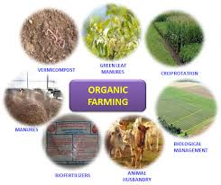

FUTURE PROJECTS
FISH FARMING

Fish assumes a significant job in the eating routine of the individuals around the world.
It is an exceptionally rich wellspring of fundamental supplements and creature protein.
A deficiency of dietary protein in people prompts lack of healthy sustenance, shortcoming,
high newborn child mortality and medical issues with the eyes, liver, kidneys, bone breakage
and memory misfortune. This circumstance can be handled by expanding food fi sh creation through
broadly presenting, rehearsing and advancing network based fi sh cultivating in the snare and corner of
the nation. Aquaculture is a truly suitable technique for food (protein) creation, around multiple
times
more efficient than steers creation, multiple times more effi cient than pork, multiple times more
efficient than raising pigs and one and a half times more effi cient than raising chickens.
Hence expanding the utilization of fi sh is, generally, an acceptable option for food security.
Fish give a fundamental wellspring of pay and add to diminishing destitution in numerous pieces of
the creating scene. The development in aquaculture has been identifi ed as a key driver in boosting
the worldwide per capita utilization levels of fi sh.
In Pakistan, Sindh Province is wealthy in sea-going assets and has a solid water system arrange
dependent on the Indus River, waterways, floods, supplies, lakes, waterlogged regions and town lakes.
Adjacent to this, the place where there is Sindh is exceptionally prolific for fi sh cultivating and subsequently most of fi sh ranches are situated in Thatta, Badin and Dadu locale through which the Indus River passes. Badin and Thatta have waterlogged fl oodplain territories which are entirely reasonable for fi sh cultivating. Around 6,000 fi sh ranches with a normal size of 5-10 ha are practically working over the region and utilizing 20,000 individuals in this industry. At last, the territory and its regions have the best potential and enormous open doors for the reasonable aquaculture development and advancement
We are planning to make fish farm at 20 acres ,where different species will be available
i.e kurra,grass, etc.
we have planned to run with expert team having 20 years of experience in their respective field.
Fish is mainly depend upon deep water for this we are deepening the farm through excavations and
tractors ,solar tubewell are being installed to make sure water whole year in the pond
Needs will be given on expanding fish creation through renewal of fish assets in common water bodies
with quality varieties, oceanic research and preservation program malady control, hereditary,
sustenance and co-usable angling during next three years in the territory.
Concentrate would be made on progress of coordination and contact with the scholarly community for fisheries
innovative work, presentation of new and quickly developing assortments of fish species and presentation of
confine fish culture.
He said a comprehensive arrangement has been advanced for assurance of fish biodiversity, foundation fish
markets linkages and research wing.
The authority encouraged ranchers and jobless individuals to exploit the offices and motivators gave by the
administration and guaranteed specialized help in foundation of incubation facilities and model fish homesteads to lighten destitution and joblessness.
ORGANIC FARMING

Natural cultivating is an option agrarian framework which began right off the bat in the twentieth century in response to quickly changing cultivating rehearses. Guaranteed natural agribusiness represents 70 million hectares all inclusive, with over portion of that aggregate in Australia.[2] Organic cultivating keeps on being created by different associations today. It is characterized by the utilization of composts of natural inception, for example, fertilizer excrement, green compost, and bone feast and places accentuation on strategies, for example, crop turn and buddy planting. Organic nuisance control, blended editing and the cultivating of creepy crawly predators are empowered. Natural norms are intended to permit the utilization of normally happening substances while disallowing or carefully restricting engineered substances.[3] For example, normally happening pesticides, for example, pyrethrin and rotenone are allowed, while manufactured composts and pesticides are commonly denied. Manufactured substances that are permitted incorporate, for instance, copper sulfate, essential sulfur and Ivermectin. Hereditarily changed life forms, nanomaterials, human sewage ooze, plant development controllers, hormones, and anti-toxin use in domesticated animals cultivation are prohibited.[4][5] Reasons for advocation of natural cultivating remember favorable circumstances for sustainability,[6][7] transparency, independence, self-governance/independence,[7] wellbeing, food security, and sanitation.
Convertible cultivation Rotational touching Hobby Intensive
animals pigs crops Natural Orchard Organic Paddy field Ranching Sharecropping Slash-and-consume
Terrace Steam
cleansing
Natural rural techniques are globally controlled and legitimately authorized by numerous countries, situated in huge part on the norms set by the International Federation of Organic Agriculture Movements (IFOAM), a universal umbrella association for natural cultivating associations set up in 1972.[8] Organic farming can be characterized as:
an incorporated cultivating framework that makes progress toward manageability, the improvement of
soil fruitfulness and natural assorted variety while, with uncommon exemptions, precluding manufactured
pesticides, anti-toxins, engineered manures, hereditarily altered living beings, and development hormones.
Natural cultivating depends vigorously on the characteristic breakdown of natural issue, utilizing procedures
like green fertilizer and treating the soil, to supplant supplements taken from the dirt by past yields.
This organic procedure, driven by microorganisms, for example, mycorrhiza and night crawlers permits
the normal creation of supplements in the dirt all through the developing season, and has been alluded
to as taking care of the dirt to take care of the plant. Natural cultivating utilizes an assortment of
strategies to improve soil ripeness, including crop pivot, spread editing, decreased culturing, and
utilization of manure. By diminishing culturing, soil isn't reversed and presented to air; less carbon
is lost to the environment bringing about more soil natural carbon[citation needed]. This has an additional
advantage of carbon sequestration, which can diminish green house gases and help invert environmental change .